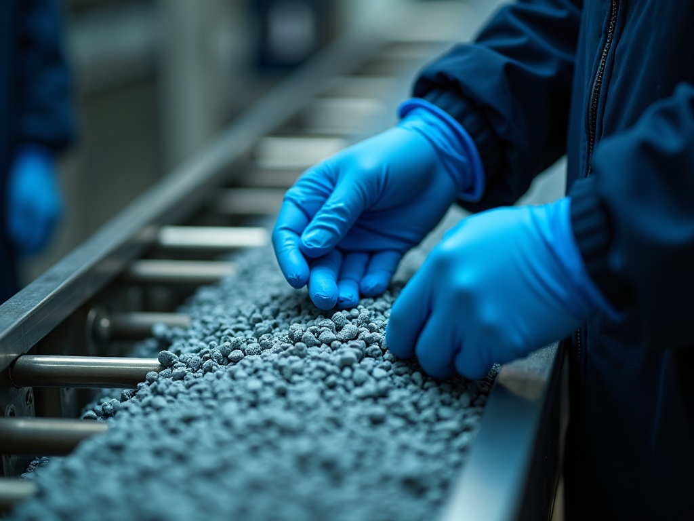
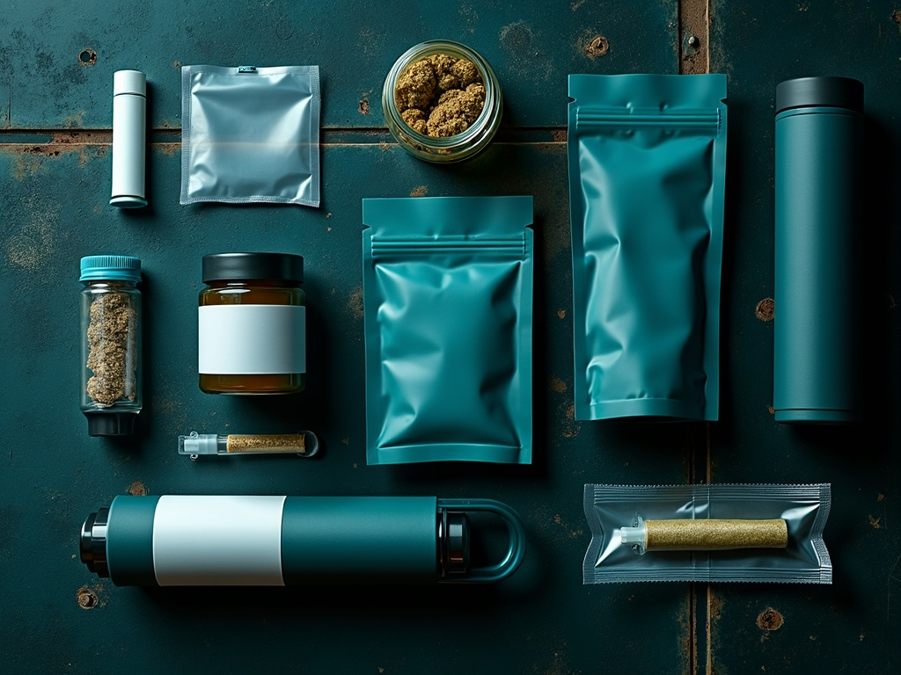

End to end, one rate
Compliance, prep, fill, QC, tubing, labeling and shipping fold into one rate, with no surprise line items.
 Flagship · operator to operator
Flagship · operator to operator
A per-strain robotics line with a human-QC finish - the proven flagship the whole shop is built around.
See the flagship →Products
Services
BatchWorks is founder-built pre-roll manufacturing infrastructure for licensed Nevada brands. Plug your brand into a dedicated line that turns your flower into shelf-ready units at a disciplined ~95% yield, and stop carrying a production department you have to staff.
Infrastructure not labor · every format · quote-only pricingThis is not a pitch deck. BatchWorks operates within one of Nevada's largest licensed production environments, with the reliability and capacity a scaling brand actually needs. The line runs at volume and holds its standard while it does it.

There are two ordinary ways to make pre-roll at volume, and both let the production model, not the brand, set the ceiling. Build it in-house and you own a roll room: a 6-10 person crew on fixed payroll, a 10-person operation whose cost climbs with headcount faster than quality does. Hand it to a generic co-packer and you become labor you ship scraps to. BatchWorks is the third way, infrastructure not labor.

A finished pre-roll is one line item that covers every step on our floor: intake and METRC compliance, biomass prep, grind, fill, Dutch Crown finish, dual weight checks, then tubing, labeling and shipping. Because that whole path lives under one roof, a new format is idea-to-shelf R&D, not a capital project.
Compliance, prep, fill, QC, tubing, labeling and shipping fold into one rate, with no surprise line items.
There are no minimums and no 1,000-unit floor to clear, so short strains and limited drops stay viable.
A 24-hour pilot run and a full launch use the same line and the same discipline, scheduled fast.
Prototype a new SKU and ship it on the line you already run, idea-to-shelf R&D without a separate shop.
Pre-roll is our in-house flagship. The rest of the catalog is partner-facilitated under the same umbrella, so a brand gets it all done without building a single line. Start with the flagship, then route to any capability you need.
Flagship · in-house
The dedicated flagship line: every format and infused SKU, dosed and finished at a measurable ~95% yield.
See the flagship lineLive resin, badder, sauce and diamonds, coordinated under one roof.
Explore concentrates Partner-facilitated
Partner-facilitated
Cartridge and vape formats filled and finished to your SKU spec.
Explore vapes & cartsClean, high-potency distillate sourced and coordinated for your programs.
Explore distillate
Partner-facilitatedTubes, components, master cases and labeling, sourced and assembled to spec.
Explore packagingLaunch under your own brand on the same measured line and discipline.
Explore white-labelThe yield comes from method: a per-strain ecosystem, each robotic setup matched to the SKU it runs, finished by hand. See the full process
Compliant intake, then biomass prep, grind and homogenize, tuned to the strain's moisture and density rather than one blanket setting.
A robotic fill matched to each SKU's grind, dosed to spec down to a fraction of a gram, with a clean Dutch Crown finish.
A weight check at fill and a second weight check with rejection QC, then tubing, labeling and shipping, shelf-ready.

A manual roll room recovers 80-85% of the flower you feed it. The BatchWorks flagship holds a measurable yield of about ~95% yield. On a real run, the gap between 80-85% and a ~95% yield is inventory you already own, recovered into sellable units instead of swept off the floor, recovered margin that helps pay for the service.
Put BatchWorks next to the co-packers a brand actually shops and the gaps are concrete. No researched competitor publishes a yield number; BatchWorks names one and runs to it. See exactly how a batch runs


Two million joints in, the standard does not move.
BatchWorks was built by brand builders who lived the problem, not machinists who never have. Founders Jacob Silverstein and Zach LoBello came up on the brand side with Hunter & Leaf, then built the production line they wished they had had. That is the discipline behind the numbers.
Representative client panel, marked swappable. The owner figures and founder pedigree are real and stated as fact; a named client reference swaps in when supplied.
There is no public price, because the right rate depends on what you run. BatchWorks converts a fixed production payroll into a variable per-unit cost, charged only on the finished, shelf-ready units you actually produce. Here is where to go next.
BatchWorks runs on quote-only pricing: no public number, because the right rate depends on your format mix, your SKU depth, and your volume. Give us those and we size your program. Stop scaling your roll room. Start scaling your brand.
Request a confidential quote with your SKUs and volume, or reach out and talk the program through first. Either way you get a real rate scoped to your run, with no public price.
Request a Quote Contact usQuote-only pricing · no minimums · scoped to your run
Ready when you are